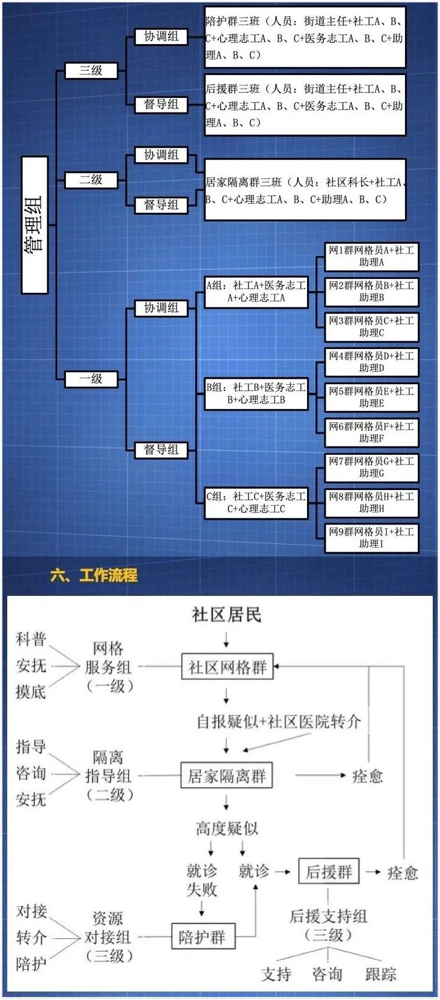

武汉的城市血管：他们输送食物、温暖与爱
原文链接 备份链接 2月2日那天早上6点47分，家住武汉三环外的王莉全副“武装”地出门了。从1月26日武汉封城第三天开始，她就一直在做滴滴社区保障车队的司机志愿者。口罩、护目镜、防护服，从早上七点出门到晚上七点回家，将近十二个小时都不能 …


当陷入混乱的社会无暇顾及一个个具体的人的呼声时，陪伴已经是“社工共振”所能提供的最有价值的人性关怀。即便不能实实在在地立即满足需求，即时的回应和安慰也总比无人理会要好得多。“起码让他觉得，他不是一个孤岛。”
作者｜江婧怡
当社会面临极端情况，市民自发形成的志愿组织会成为机器停摆下重要的补充力量。
我们此前报道过的医护出行互助群、口罩天使小分队和医用物资信息对接平台，在武汉疫情的前线形成了某种枢纽或者平台，及时解决了城市混乱状态下医疗系统的部分运转问题。今天，我们希望来聊一聊社工和社区，以及一个名为“社工共振”的线上志愿社工团队。
在此次疫情中，社区作为社会管理的最小组织形式被充分调动起来。根据2012-2020年武汉市中心城区社区布点规划，全市985个社区服务于1100余万常住人口，中心社区的服务人口标准为1.5-3万人。
疫情之下，面对如此庞大的人群和急迫的细致化管理要求，在原有社区工作者超负荷运转的状态下，引入职业社工协助信息筛选和资源调配，进行更广泛的民众防控和心理干预是此前被忽视的隐性需求。
在内地，人们对社工的认识大多仍停留在自愿的慈善服务上。但在欧美等发达国家以及香港地区，社工完成了职业化和专业化的过程，让他们参与进社会服务和发展已经形成一种行之有效的解决社会问题的方法。
我们可以把“社工共振”理解为是武汉市民与社区、医院、集中隔离点等各方之间的中间人，或者缓冲层。他们的介入未必能直接为武汉人解决很多迫在眉睫的现实问题，但也不是所有问题都能以立竿见影的方式解决。
OurCity
专业救援
郁之虹是“社工共振”的设计者。她还有另外两重身份：武汉大学社会学系的老师，以及土生土长的武汉人。
伴随1月23日上午10时离汉通道的关闭和市内公共交通的停运，武汉陷入了疫情爆发以来最慌乱的时刻。自上而下的支援力量到来之前，强烈的孤岛感促使一大批自发形成的民间志愿团体涌现，自救成为当下武汉人最核心的命题。
如何以学者的身份参与进这场紧急救援，是郁之虹那几天一直在思考的问题。“封城”的第二天，她建立了一个高校社区对接群，召集一批社工专业的高校教师，希望能整合出一套方案来支援武汉一线社工的工作。
在郁之虹看来，社会热线的形式已经不足以支援武汉的现况，“它更像是创可贴的作用，电话打进来的当下是管用的，但再打进去是下一个接线的咨询师，很多东西又得重来。而且对于武汉人来说，目前最着急需要解决的是生存问题，而不是单纯的心理抚慰。”
建立一个有针对性、持续性的服务体系，同时链接社工、心理、医疗志工资源，并依托于一个个具体社区下沉到居民中去，是郁之虹认为当下更为合适的运作模式。“而且方式一定是通过线上，社工的价值不在于冲到一线去送菜送饭，而在于能够在短时间内持续服务到更多的人群。”
这一方案被她称为“2+3”线上社区下沉抗疫模式，“2”指的是在地社区工作者和线上志愿社工，“3”指的是线上医务志愿者、心理志愿者和社工助理。以社工为主导的这样一套志愿者班底又将被分别安排到三级防御模式中，从健康的社区居民，到发热隔离人员，到确诊患者及疑似案例，针对不同需求人群提供相应的帮扶服务。

▲郁之虹设计的“2+3”线上社区下沉抗疫模式
模式下沉到社区所需要的大量志愿者，一方面来自武汉大学的学生资源。最开始帮助郁之虹组建团队的姜姜和胡悦是她以前的学生，最核心的协调组也基本由她社工专业的学生组成，医疗志工起初大多也从武大历届医学生中招募。
另一方面来自郁之虹在各地高校和学术组织的人脉。一腔热血之外，专业性和实务经验是“社工共振”招募志愿者尤其是社工和心理志工的硬指标。
黑龙江的龙江社工是目前为止唯一以团队形式加入“社工共振”的，包括心理、社工、医疗三方面共三十余位志愿者。据社工志愿者牛洋介绍，郁之虹是通过联系省社科院社会学研究所的所长黄红，进而对接进黑龙江的社工资源。
参与进武汉救援的这一批志愿者均要通过龙江社工督导组严格的资质审查，选派的社工基本都拥有中级社工证，并具备多年的教学经验或实务经验。
牛洋本人是2008年全国第一批参加社会工作者职业水平考试，并通过社会工作师考核的4105人之一。她曾参与过2018年哈尔滨825重大火灾事故的社工志愿救援工作，在她的印象中，这是黑龙江灾后社会工作开启的契机，也是她十余年社工经验中，实务能力真正迅速获得提升的一个拐点。
心理志工1组的组长顾敏来自上海，在一家世界200强国企做了十几年的EAP（企业员工心理援助），周末时间在上海市教育局指定的心理辅导机构做心理咨询师。她从中德班的学员群里看到了“社工共振”的消息。
“当时我还和我的老师开玩笑，说武汉社区很厉害，来到中德班招人。”中德班是中国心理咨询领域最早的专业培训之一，顾敏所在的这一期是中德心身医学与心理治疗连续培训项目，面向全国招生，最终仅审核通过了不到200人。
国内最早一次对灾难中的人进行大规模的心理干预，是从2008年汶川地震开始的。但当年的灾后救援中，一句“防火防盗防心理咨询师”的俗语广为流传，这指的是那时候由不专业的、缺乏组织的心理救援带来的次生伤害。
这一次应对武汉疫情，顾敏在跟我介绍心理志工组的线上救援计划时，在征得求助人同意的前提下加入助手而进行咨询的伦理保护原则、实时进行咨询记录整理、引入有危机干预经验的心理咨询师督导、每日研讨会等措施，至少从架构上看已经具备了相当的模式化程度。
重大灾难面前，当所有目光汇聚于大局和秩序，许多悲剧往往发生在对个体的忽视中。在一套完整的抗灾应急机制里，对社会情绪的拯救需要被同步启动。
OurCity
到社区去
基于各地高校和专业机构的动员，目前“社工共振”在全国范围内储备的志愿者团队已经超过400人。如何将这一大批民间志愿者输送到武汉社区一线去，是郁之虹的下一个难题。
“2+3”的方案其实很快就在社工圈内传开。郁之虹告诉我，1月30日，也就是文章发布的当天，湖北省社工联合会就曾在公众号后台留言联系过她，目前这套模式也已经被武汉市社工联合会纳入了社工干预指南。
可是要实际落地到具体的街道和社区，专业领域的认可不足以支撑她迅速展开行动。我很好奇她如何赢得区政府的信任和配合，毕竟社工在内地仍是一种新兴事物，职业化的步伐还远没有跟上。
以往社会工作者与社区的合作机会和空间也很有限，一般是市民政局向社工机构购买服务时，社会工作者才会对接进相应的社区和街道提供服务。而且这一次疫情对于社会的各个环节而言，都是一场前所未有的挑战。
武汉大学的任教经验为郁之虹积累了不少当地成熟的社工机构资源。这套方案于1月29日首先在泽霈社会工作服务中心试水，服务武昌区的白沙洲和江岸区的台北路。这是2014年在武汉成立的一家非营利性民间组织，也是她此前为社工专业学生联系过的实习单位。
用两天时间帮助泽霈运转起来后，郁之虹又立刻转向江汉区建立自己的“社工共振”团队。在这次疫情中，江汉区是武汉的重灾区之一。作为老城区，这里的人口密度高，老龄化程度更加严重，居民获取信息、进行自我保护的能力相对较弱，社区工作的压力也因此相应变大。
通过常年负责江汉区青少年空间的朋友陈宇，郁之虹很快联系上北湖街道的负责人。合作比她想象得要顺利。
“这一次疫情来得太突然了，大家都还是按照惯常的模式继续在运作。很多街道会很犹豫是否要敞开大门，毕竟我们是民间志愿者。疲于奔命之时，让政府和社区主动去想到跟社工志愿者对接的可能性是很低的。”
但“社工共振”又必须落到社区中去。在武汉现行的城市管制方案中，发热患者的初筛、免费交通车的安排、集中隔离人员的生活服务等都需要联系社区。社区是武汉居民获取医疗和生活帮助的最近道，也是必经之路。
尤其在疫情指挥部2月2日宣布必须完成对“四类人员”的集中收治、隔离，以及2月11日宣布全市范围内所有住宅小区实行封闭管理后，社区和临时集中隔离点的工作人员实际上成为医务人员之外工作压力最大的群体之一。
“社区是我们最基本的社会组织，一旦社区乱了，我们整个社会都会受到很大的冲击。很多居民的需求是很实际的，如果你脱离了社区，你的工作也进行不下去。”
前期设想中，志愿者会直接进入原有的社区网格群，对接群内的所有居民，但这种不分级不筛选的方式非常依赖志愿者个人的热情投入，且群的活跃度往往不是很高。
“如果能下沉到所有的网格群，那也是有价值的，因为可以接触到大部分居民。但这种方式需要对接进数量众多的微信群，难以筛选出有动力参与互动的居民，目前我们人力资源不够，这样做容易造成人力浪费。”
于是在与江汉区的合作中，“社工共振”除了入驻网格群之外，还额外建立了数个提供针对性服务的群聊，包括科普、亲子、长者咨询、居家陪护、酒店陪护、酒店员工支持等，通过网格群招募有需求的居民进群。
2月1日，“社工共振”的6个新微信群正式开始运作。
OurCity
有价值的陪伴
第一声求助发生在居家陪护群，时间是晚上10时56分。
“各位哥哥姐姐晚上好！我家人22号发烧到现在，十几天高烧了。今天下午几乎不能言语，不能行走，呼吸困难。请求各位又没资源能帮忙的。”
求助者田婷（化名）本人并不在武汉，她的哥哥在当天情况危急，已经打120送到武汉市第五医院进行救治，但由于还没等到核酸检查的名额，哥哥无法确诊入院，为此她已经往社区和肺科医院打了一天电话。
与此同时，另一位求助者殷女士（化名）也在群内发出了大段的求救信息。医生诊断她77岁的母亲极大概率罹患新型冠状病毒引发的肺炎，但母亲就诊的社区医院和东西湖人民医院无法立刻安排确诊和入院。
目前她在东西湖区的家中负责照顾孩子，丈夫在汉阳照顾母亲和她有智力缺陷的妹妹。她希望能通过“社工共振”争取到医院的床位资源。
群中出现的这两条求助讯息需求明确且一致，都是想亲人尽快摆脱居家隔离的状态，转移到医院获取治疗。但在“2+3”的三级防御模式中，居家陪护群属于第二级防御，专门针对居家隔离的发热人群提供指导、咨询、安抚，暂时不能直接对接进医院。社区是绝对绕不过的一关。
根据武汉1月24日开始全面实行的发热市民分级分类就医，尽管指挥部宣布指定发热门诊不得以任何理由拒收病人，但发热案例仍需要经由社区医院上报，将病人送往定点医院的车辆也由各区统一安排。
面对田婷和殷女士的求助，首先进行回应的是社工志愿者陈宇。在询问完二人具体的区街道社区后，心理志工刘洋随即跟上，在群里@求助者，回复“看到了你的委屈和无奈，假如我是你，我可能早就疯了，你做的很好，很坚强，也很理智。”
另一位社工志愿者黄莹开始引导田婷提供更详细准确的信息。在她上传患者的血常规报告单和CT影像后，医疗志工李易易跟进，进行了初步的判断，安抚田婷从血象上看她哥哥罹患不一定是新型肺炎。
李易易在群里出现后，殷女士立刻把母亲的CT影像和自己的身份证发到群里，并直接@她，恳请“李医生”帮忙诊断。
此时已经过了午夜12点，郁之虹开始动用自己的资源联系医院，群内社工则向殷女士接连抛出一个个具体而简单的问题，比如今晚她的情况怎么样、现在入睡了吗、你是否在她身边呢、家里有没有吸氧的设备，将求助者的叙述逐步由情绪宣泄转变为情况陈述。
群内这样的交流持续到将近凌晨1点。第二天上午，殷女士母亲的情况危急，她和她的丈夫又一次在群里求救，前一晚有所缓和的情绪又变得激烈起来。郁之虹忙活一整晚帮忙联系的汉阳医院由于不是定点医院，最终没能收治殷女士的母亲，希望的落空让她又一次陷入崩溃，“如果能够挽留我妈妈的生命，我立刻死掉都可以啊！”
郁之虹已经预见到这种情况的必然发生，也知道“社工共振”目前实际上并不能满足求助者对医院床位的需求，居家陪护群能起到的作用更多是预防性的情绪干预。
“人是一步一步走入绝境的。他们很抓狂的那一部分，是在一个极度绝望的状态下表现出来的。我们如果不想积压这种社会情绪，就要在她走入这一步之前进行干预，就要给她回应，给她帮助，给她信息，有了这些信息她才觉得有信心。”

▲最近“社工共振”团队正在做的哀伤辅导专家课
最终，殷女士的母亲在“社工共振”的帮助下，进入了对应社区的重点跟进关注名单。从结果上看，这样的帮助似乎只是比原有状况稍好了一些，根本问题并没有立即得到解决。
社工志愿者牛洋一度很难相信，这样一场纯粹发生在线上的社工干预行动能真正帮到居民什么。她被分配到的酒店陪护群同样属于第二级防御，面对的是集中隔离在悦酒店的数十位居民。
像殷女士这样的个案并不是天天都会遇到，更多情况下，牛洋每天需要解决的是像房间没有卷纸、饭菜口味不佳、帮忙收取物件这样的日常需求。而这样的问题最终仍需要酒店隔离点现场的工作人员去解决，“我们起的是一个缓冲的作用。”
2月4日那天，在悦酒店隔离的一位60多岁的婆婆向酒店管理人员发出求救。她的老伴此前已确诊新型肺炎，并在武汉红十字会医院的重症监护室待了很多天，但她刚刚接到老伴的电话，说他的病房被换到了楼下，感觉医院正打算放弃对他的治疗。
前一天，医院下发病危通知书时，社区工作者已经冒着风险，消耗了五套防护服陪伴这位老阿姨去看望她老伴。如今婆婆提出想再去一趟医院，或许是见丈夫的最后一面。
多方沟通之下，这个要求最终并不能被满足。牛洋他们曾想过，能不能联系红十字会医院的医生给婆婆的老伴拍一个小视频，也因为医院严密隔离的现状而作罢。
当初报名参加“社工共振”的时候，牛洋并没想到武汉现实的情况有如此严重，“面对很多平时都应该是能解决的问题，在特殊情况下真的就是无力解决。”她不可避免地产生了强烈的共情和无力感。
即便志工们大多拥有着丰富的实务经验和深厚的理论背景，但“等到参与其中，通过他们的倾诉和朋友圈，我们了解到太多局外人看不到的东西。”
同样参与进这个个案的心理志工顾敏也提到，之前她和其他心理咨询师做预备工作时，曾设想过用各种心理学工具开展线上疏导，比如调整认知、激发服务对象自身积极性、短交中的例外提问，但“真正是面对服务对象的时候，我们做的更多的还是倾听、共情和陪伴。”
当陷入混乱的社会无暇顾及一个个具体的人的呼声时，陪伴已经是“社工共振”所能提供的最有价值的人性关怀。即便不能实实在在地立即满足需求，即时的回应和安慰也总比无人理会要好得多。
“起码让他觉得，他不是一个孤岛。”郁之虹说。
OurCity
做些小事
不过与此同时，牛洋和顾敏也都提到，线上的干预还是有效果的。
不知道从什么时候起，酒店陪护群的志工对隔离点居民的称呼默认变成了“各位家人”。一些结束隔离期离开酒店的居民也会在群里回复他们，“你们工作这么尽心尽力，我真的把这当家了。”
刚建群的那几天，她们碰到了好几个求助者处于崩溃状态的个案。十几天过去，群友的情绪已经趋于缓和，渐渐接受武汉窘迫的现况，甚至有群友开始自发地帮志工和酒店工作人员说话，还私下加志工的微信表达感谢。
医疗志工张长江甚至在咨询的过程中交到了一位退役军人朋友。
作为武汉大学第一临床学院2018级的心内科博士，那天，他刚在桃源社区网格2群里做完一个高血压的知识科普讲座，一位群友发来了好友申请。刚开始对话的时候，这位章先生（化名）的火气很大，说他到医院做了很多检查，花了很多钱开药，却没办法很好控制住血压。
有过多年的临床经验，张长江应对这种病人得心应手。解决完用药的问题后，章先生开始向张长江倾诉自己最近状态不好的根本原因。
受疫情影响，他的公司现在无法复工，工资却还要照发，这让本身就有高血压的他更加上火。“我就跟他说，我现在也是一样，想去上班也上不了，我弟弟的公司也跟你一样，一个月要发的工资比你还多得多。”
开导之下，章先生的心情逐渐转好，现在每天都会在群里与居民、志工进行互动，偶尔还会找张长江聊聊天。“那次他问我，他现在的情况能不能喝酒，我说可以，每天喝红酒二两白酒一两。他后来就开玩笑，说那他今天酒量很大，喝半斤白酒行不行。”
像张长江一样，团队中的很多志愿者其实都可以被称为专家、精英，但在与居民接触的过程中，他们并不只表现出帮扶者的姿态。在这些志工的叙述中，专业知识的援助反而只是接近居民的渠道，最终能够达成人与人之间的共情，形成对武汉人的精神支持，占据了救援的更大一部分。

▲“社工共振”团队的抖音账号“社小兔”，会以漫画的形式进行疫病的科普
对“社工共振”两周的观察中，我也依稀看到一种新的社区与居民关系的建立。以往较为松散的管理者与被管理者角色因为突发危机而紧密勾连，武汉的居民前所未有地依赖于社区的管治，而社会上还没有真正培育出所谓具有共同文化和某种互动关系的社会生活共同体，就连全国闻名的文化先进社区百步亭，这次也没有表现出一个高度自治的社区应有的协作力和执行力。
专业社工的进入似乎有助于这个问题的解决。十九世纪八十年代大学睦邻运动的发起者巴涅特夫妇曾把社区改良活动的核心精神总结为，人们能够和他们的邻居分享他们自己，做一些小事来消除社会的不平等。
这一观点的提出，实质上是为改善社会工作找到了新的途径：居于自救和社会自上而下的管理之间，拥有知识的个人和团体可以进入居民之中，提供更专业化的服务来协助社区的改良。武汉这次疫情的偶然发生，或许是当地社区文化发展，以及社工的效用为国人广泛认知的一次机会。
现在，“社工共振”的服务范围已经从江汉区的北湖街道、悦酒店，扩大到花楼水塔街社区和新华路纽宾凯、新华路全季、常青五路7天、民航胜家玫瑰四家隔离点酒店。核心协调组的姜姜告诉我，目前武汉还有一些街道社区正在主动联系他们，希望可以推广这一套模式。
之前帮助“社工共振”落地江汉区的陈宇，在武汉前线又帮忙联络了新建不久的方舱医院。2月6日，湖北省民政局联系郁之虹，希望“社工共振”的服务可以对接进方舱。次日，志工团队便进入洪山体育馆方舱医院，首批尝试服务50位病患。
目前“社工共振”已经与洪山体育馆武昌方舱医院和武汉客厅方舱医院达成合作，在线服务超过900位方舱患者。
在洪山区方舱内，“社工共振”用2天时间建立起了舱内互助机制，将122名的舱友分为五个区，并推选出各区区长，由区长主导、舱友协助，做一些帮助病友清理垃圾、发放餐食、维持环境卫生、反映病友特殊需求的小事。
从牛洋的朋友圈里，我也第一次看到了脱离官方话语的方舱医院内部的模样。
她分享的是东区方舱病友群内的几张聊天截图，几位群友正在讨论一位幽默的医生。他把收治重症病人的定点医院比作重点高中，把住进方舱的这批轻症患者比喻为普通高中的学生，“你们考不上重点高中的，就在普通高中好好呆着吧！”
刷到这条的时候，我意外发现她的上一条朋友圈发了一张酒店窗边的红色郁金香照片。我对这盆花的印象很深。那是悦酒店隔离点的居民进入酒店陪护群的第一天，一位女士问了这个群的第一个问题。
“今天早上给我的花都开了，我想问，需要浇水么？”
（*文中田婷、殷女士、章先生为化名）
@城市OurCity原创内容 转载请联系授权
欢迎转发朋友圈

History Review


原文链接 备份链接 2月2日那天早上6点47分，家住武汉三环外的王莉全副“武装”地出门了。从1月26日武汉封城第三天开始，她就一直在做滴滴社区保障车队的司机志愿者。口罩、护目镜、防护服，从早上七点出门到晚上七点回家，将近十二个小时都不能 …
原文链接 备份链接 “ - 疫 情 之 下 - 武汉的疫情就像一簇紧簇的乌云，笼罩在每一个人的心头。但所幸，在这个受伤的城市中，在每台志愿者车里，在疲于奔波的路上，总有那么一群可爱的人，温暖着我们前线医护工作者的心。 ” 1 2020年 …
原文链接 备份链接 伴随着火神山、雷神山医院开始收治病人，15家方舱医院陆续启动， 各省医疗队开赴武汉，武汉所有确诊患者与疑似病例都将“应收尽收”。 在人类抗击疫病的历史上，“武汉会战”已成为一场史无前例的超级行动 图/新华、中新 武汉 …
原文链接 备份链接 来源：雪球App，作者： 八点健闻，（https://xueqiu.com/1553077980/140215390） 岳父发烧9天 ，妻子发烧6天 ，CT报告都显示“双肺严重感染” ，却一直没能得到检测 ，确认是不是 …
原文链接 备份链接 *************▲*************2月9日，医护人员在雷神山医院了解新冠肺炎患者病情。（新华社 高翔/图） 全文共4438字，阅读大约需要10分钟。 只要有病人，就有工作，一旦丢失了客源，也就失 …